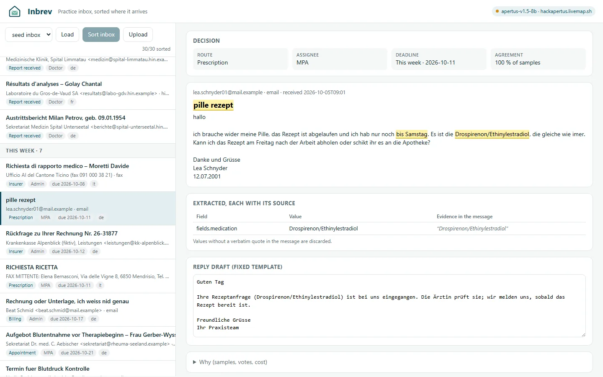
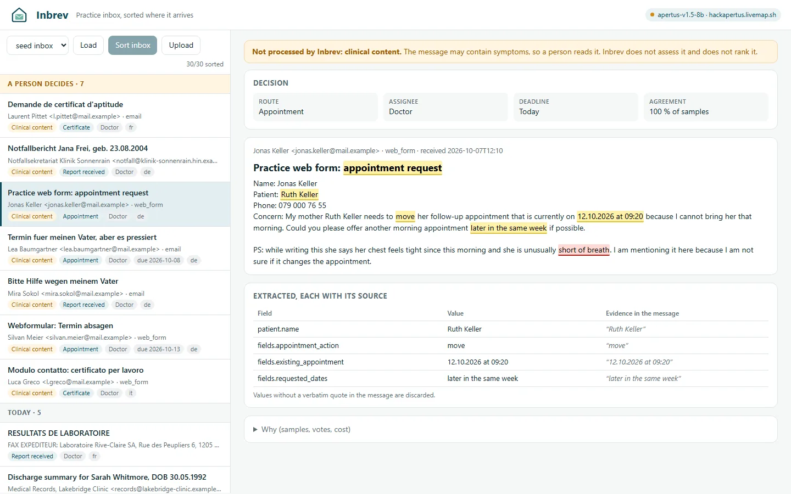

Hack Apertus 2026 · Track 2B · Team Apertool
Run locally, the practice inbox never leaves the practice.
Inbrev sorts the inbox of a Swiss GP practice by handling path and
deadline, with Apertus, built to run on a box in the practice. Every
field it extracts quotes its source.
solo builder · fictional data only
The problem
Before the first patient, there is the inbox.
Lab reports, refill requests, insurer forms, referrals and faxes in
German, French and Italian all land in one queue. A medical practice
assistant (MPA) reads them one by one.
9.5h / week
of administration for Swiss GPs and paediatricians in 2025, up
from 8.6 h in 2020.
Zeller, Fischer, Hernandez, Praxis 2026 · 5th Workforce
Study, n = 1,776
54min / day
that practice-based doctors spend on requests from authorities and
insurers alone.
gfs.bern for FMH, 2025 · N = 1,532 doctors
Art. 321
Swiss Criminal Code: professional secrecy binds doctors
and their assistants. Every message in that inbox is
covered.
SCC, SR 311.0 · health data are sensitive personal data under FADP
Art. 5
How it works · Purposeful use of AI
Sorted by who handles it and by when. Every field quotes its source.
01 · READ
Mail, forms, faxes
E-mail files and IMAP (tested on a local test server), web forms, fax PDFs via OCR (tested); HIN planned. German, French, Italian and English.
02 · ROUTE
9 handling paths
Report, appointment, refill, insurer, referral, certificate, billing, marketing, other. Plus an administrative deadline and who takes it: MPA, doctor or admin.
03 · PROVE
Quote or drop
Every field carries the exact words it came from. Code checks that the quote is in the original. If Inbrev is unsure, a human decides.
Clinical contentA message that may contain symptoms is excluded from automation and
goes to a person, like any message Inbrev is unsure about. Inbrev
does not judge it and does not rank it.
Apertus reads free text in four languages. Everything code can check
(AHV numbers, dates, quotes) is checked by code. Small
local models do best on narrowly cut tasks (Xu et al.,
JMIR 2026, CHUV).
Demo
One click. Sorted by path and deadline; what needs a person goes to a person.


Screenshots of the running app with stored Apertus 8B results on
fictional test messages. Left: handled automatically, every value
with its quote. Right: shortness of breath mentioned in passing, so
a person reads it; no ranking.
Architecture · Sovereign deployability
Pull the cable. Inbrev keeps sorting.
Inside the practice · no outbound connection at run time
Inbox
.eml, HIN mail, web form, fax PDF
›
Parse + OCR
pdfplumber, Tesseract deu / fra / ita
›
Rule extractors
AHV no., dates, received time
›
Apertus v1.5 8B
forced JSON schema, thinking off
›
Quote checker
quote not in original → field dropped
›
3 runs agree?
no → “you decide”
›
Sorted inbox
web UI, JSON, local audit log
On-prem boxMini PC in the practice; CPU or small GPU
Air-gappedModel host offline; a mail gateway hands messages in
Swiss cloudOption for single practices, Swiss hosting
Local Q4Offline in Docker on CPU: 19 messages / hour; same weights on the laptop GPU: 62.7 s / message
Offline run, measured
network practice internal: true
egress dns / tcp / https: FAILED
weights sha256 a037df8d… = HF
30 messages, Q4 on a 28-W laptop CPU
route 24/30 · endpoint 23/30
192 s / message · RAM 6.2 GiB
network practice internal: true
egress dns / tcp / https: FAILED
weights sha256 a037df8d… = HF
30 messages, Q4 on a 28-W laptop CPU
route 24/30 · endpoint 23/30
192 s / message · RAM 6.2 GiB
Evaluation · Technical rigour
Measured: what leaves automation, and what still runs by itself.
180 synthetic messages, [[NIKLAS-PRÜFUNG: pitch-gold – Folie Evaluation, Lead-Text]] Symptom pass
chosen on a dev split, measured once here. Challenge set, 44 clinical:
8B 41/44 with p3 (dev for the second check), 70B 44/44, rules 31/44.
| Setup | Macro-F1 9 paths |
Clinical exclusion recall |
Recall “today” |
Runs automatically |
|---|---|---|---|---|
| Keyword rules + lexical net | 0.76 | 0.44 (7/16) | 0.76 | 88 % |
| TF-IDF + log. regression | 0.82 | 0.13 (2/16) | 0.66 | 99 % |
| Apertus 8B, one answer, no checks | 0.84 | 0.56 (9/16) | 0.70 | 95 % |
| Inbrev with Apertus 70B | 0.96 | 0.94 (15/16) | 0.94 | 82 % |
| Inbrev 8B, before 13 Oct | 0.94 | 0.81 (13/16) | 0.88 | 84 % |
| Inbrev 8B + symptom pass | 0.94 | 1.00 (16/16) | 0.94 | 78 % |
Prompt p3, built on a separate dev set. Runs automatically =
neither unsure nor flagged. Paired on the 180, 8B beats the rules
32 to 5 (p = 7·10⁻⁶). With the symptom pass 41 % of flags are clinical (16 of 39). Fax pages
via OCR: route 50/60 (clean 56/60). Other open models: next slide.
Test set v0: 180 fictional messages
- Labels are fixed before any text is written.
- Text by two other model families (Claude, GPT-5.5), 90 each, plus 42 by an open model (Nemotron) as a control. Apertus never writes or labels test data.
- Two open models (not people) relabelled all 367 test messages blind: κ 0.93 route, 0.97–0.98 clinical. [[NIKLAS-PRÜFUNG: pitch-labels – Folie Daten, Zweitlabel-Punkt]]
- Reports written by people: GraSCCo 40/40, PARHAF (French) 37/38 routed correctly.
Purposeful use of AI · model choice
Why Apertus, and what it costs.
Measured: same pipeline, 180 messages
- Qwen3.5-9B and Ministral 8B: route 177/180, clinical 16/16
- Apertus 8B: route 170/180, clinical 13/16; 70B 172, 15/16
- Unnoticed (wrong route + clinical): 8B 9 + 3, Qwen 1 + 0
- Fix chosen on a dev split, measured once: symptom pass → 8B 8 + 0 at 40/180 to a person (Qwen 1 + 0 at 38). Clinical gap closed, route gap only narrowed (4 + 0 with a rules gate, 69/180)
Why we still choose Apertus
- Pretrained only on openly available data, robots.txt opt-outs applied retroactively, personal data filtered (arXiv 2509.14233)
- Published dataset catalogue, EU training-content summary and EU Code of Practice statement (swiss-ai/apertus-data-transparency)
- Developed in Switzerland; all training artefacts released
- Local run, quote checks and the unranked safety net work with any open model: no argument for Apertus
A trade-off, not a free choice. Fresh hold-out (146, Gemma 4,
frozen before any run): 8B 5 wrong routes run automatically at 40 to a
person, Qwen 0 at 24; better prompts alone change nothing. Option for
practices with 70B access (e.g. Swiss cloud): 70B second opinion when
rules disagree, 3 at 45. A practice that must justify which model reads
patient mail can point to Apertus' documented provenance. Not legal advice.
Value, cost & scalability
Swiss francs per 1,000 messages, on hardware the practice owns.
On-prem, CPU only · model calculation
Apertus 8B Q4 · mini PC
≈ CHF 12
per 1,000 messages at 60 a day (box, power)
Measured: 192 s / message offline, 1 sample. Assumed: box CHF 700
over 3 years. Up to 450 messages a day; energy alone CHF 0.52
Swiss cloud VM
8 vCPU, Swiss provider
CHF 2.39
per 1,000 messages, billed while sorting
CHF 0.0448 / h (Infomaniak list price)
CHF 32 / month if always on · other CPU, not measured
CHF 32 / month if always on · other CPU, not measured
Reference
Swiss token API
CHF 2.59
per 1,000 messages at the listed Apertus 70B price
Tokens measured: 1,398 in, 644 out (8B, p2)
CHF 0.70 / 2.50 per million tokens (Infomaniak)
CHF 0.70 / 2.50 per million tokens (Infomaniak)
Prices excl. VAT, 4 Oct 2026. Power: mini PC with the same CPU,
38–39 W (ServeTheHome); ElCom 2026 median.
assumptionWhat it buys (assumption model, not measured): 60 messages a day,
60 s by hand vs 15 s to check a suggestion ≈ 32 MPA minutes a day,
net ≈ CHF 350 a month; break-even at 33 s per message. Interviews pending.
Intended purpose · Implementation feasibility
Administrative by default. The clinical mode is research only.
Default mode: Inbrev does
- Sort by handling path and administrative deadline
- Extract patient and case fields, each with its quote
- Hand clinical content to a person, unassessed and unranked
- Say “you decide” when it is unsure
Default mode: Inbrev never does
- Rank messages by clinical severity
- Assess symptoms or suggest care
- Make a decision a person has not seen
- Send patient data out of the practice (local mode)
Two modes: the default triage with a safety net (all reported
numbers) and an optional clinical mode, off by default and not in the
web inbox: a keyword hint on urgency for research, not validated and
not certified; it would need classification before any clinical use.
Why the line sits here: MDCG 2019-11 Rev.1 (2025) treats software that automatically reprioritises by clinical criticality based on patient data as medical device software; software that only stores, communicates or searches is not. Switzerland classifies via MepV Art. 15 → EU MDR Annex VIII. Privacy: FADP Art. 5, 7 and 22, and SCC Art. 321.
Why the line sits here: MDCG 2019-11 Rev.1 (2025) treats software that automatically reprioritises by clinical criticality based on patient data as medical device software; software that only stores, communicates or searches is not. Switzerland classifies via MepV Art. 15 → EU MDR Annex VIII. Privacy: FADP Art. 5, 7 and 22, and SCC Art. 321.
Business model & roadmap
A module for the software practices already use.
- Who uses it
- The MPA, first thing in the morning
- Who pays
- The practice owner or the doctors' network
- Price
- CHF 150–250 per practice and month hypothesis
- Channel
- As a module inside HIN mail or practice software, not one more window
- Open core
- Hackathon code Apache-2.0. Revenue from operation, connectors, support and updates
- Later
- Germany and Austria: same workflow, after checking their secrecy and AI Act rules
OCT 2026 · HACK APERTUS
Full evaluation, offline proof, CHF per 1,000 messages; gold set
published after human review
NOV – DEC 2026
5–10 interviews with MPAs and practice owners: real volumes,
categories, fax share
Q1 2027
Pilot in one group practice on its own box; mail and
practice-software connectors
Q2 2027
Written intended purpose, impact assessment, classification
review before first sale
Team Apertool · Niklas
Wichter, solo builder
Run locally, the practice inbox never leaves the practice.
We are looking for one Swiss group practice to pilot Inbrev on its
own hardware in Q1 2027.Contact: hello@apertool.ch
inbrev.apertool.ch
Demo▶ 2-min video
Codegithub.com/NWichter/Hack_Apertus_2B_Inbrev
Dataseed and Swiss sets in track_2b/data; gold set after review